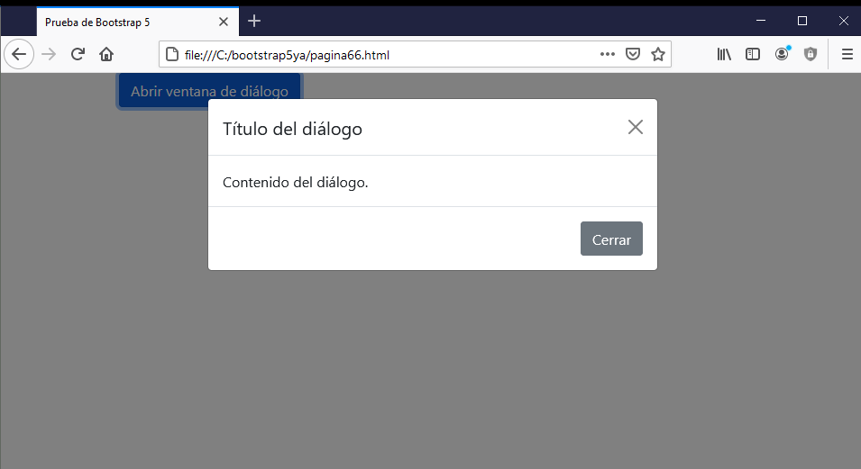
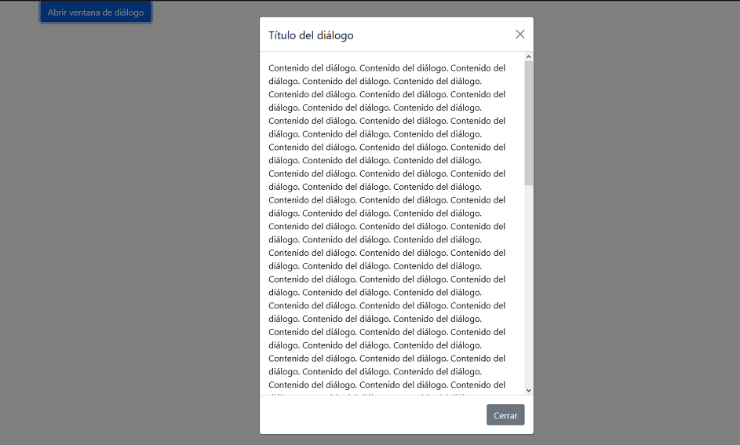

Los cuadros de diálogo que implementa Bootstrap 5 requieren de la librería de Javascript, por lo tanto no debemos olvidar de importarla.
Un cuadro modal es una ventana que aparece superpuesta a toda la página actual. Para cerrarla podemos presionar la "x", disponer un botón de cerrado o presionar en cualquier parte fuera del diálogo.
Solo se puede tener una ventana modal a la vez, eso significa que desde una ventana modal no se puede disparar otra.
Veamos una página con la estructura básica para implementar un diálogo modal:
<!doctype html>
<html>
<head>
<title>Prueba de Bootstrap 5</title>
<meta charset="utf-8">
<meta name="viewport" content="width=device-width, initial-scale=1, shrink-to-fit=no">
<link href="https://cdn.jsdelivr.net/npm/bootstrap@5.0.0/dist/css/bootstrap.min.css" rel="stylesheet" integrity="sha384-wEmeIV1mKuiNpC+IOBjI7aAzPcEZeedi5yW5f2yOq55WWLwNGmvvx4Um1vskeMj0" crossorigin="anonymous">
</head>
<body>
<div class="container">
<button type="button" class="btn btn-primary" data-bs-toggle="modal" data-bs-target="#dialogo1">Abrir ventana de diálogo</button>
<div class="modal fade" id="dialogo1">
<div class="modal-dialog">
<div class="modal-content">
<!-- cabecera del diálogo -->
<div class="modal-header">
<h5 class="modal-title" id="exampleModalLabel">Título del diálogo</h5>
<button type="button" class="btn-close" data-bs-dismiss="modal"></button>
</div>
<!-- cuerpo del diálogo -->
<div class="modal-body">
Contenido del diálogo.
</div>
<!-- pie del diálogo -->
<div class="modal-footer">
<button type="button" class="btn btn-secondary" data-bs-dismiss="modal">Cerrar</button>
</div>
</div>
</div>
</div>
</div>
<script src="https://cdn.jsdelivr.net/npm/bootstrap@5.0.0/dist/js/bootstrap.bundle.min.js" integrity="sha384-p34f1UUtsS3wqzfto5wAAmdvj+osOnFyQFpp4Ua3gs/ZVWx6oOypYoCJhGGScy+8" crossorigin="anonymous"></script>
</body>
</html>
En el navegador cuando está abierto el diálogo tenemos:

El primer div que envuelve el diálogo y tiene asignada la clase "modal" es:
<div class="modal fade" id="dialogo1">
...
</div>
La clase "fade" hace que el diálogo aparezca lentamente en pantalla.
El segundo div interno asigna la clase "modal-dialog":
<div class="modal-dialog">
...
</div>
El tercer div anidado tiene asignada la clase "modal-content":
<div class="modal-content">
...
</div>
Luego dentro de ese tercer div disponemos los divs de la cabecera, cuerpo y pie del diálogo:
<!-- cabecera del diálogo -->
<div class="modal-header">
<h5 class="modal-title" id="exampleModalLabel">Título del diálogo</h5>
<button type="button" class="btn-close" data-bs-dismiss="modal"></button>
</div>
<!-- cuerpo del diálogo -->
<div class="modal-body">
Contenido del diálogo.
</div>
<!-- pie del diálogo -->
<div class="modal-footer">
<button type="button" class="btn btn-secondary" data-bs-dismiss="modal">Cerrar</button>
</div>
Para evitar que se cierre el diálogo cuando el operados presiona una región fuera del diálogo debemos añadir la propiedad 'data-bs-backdrop' con el valor 'static':
<div class="modal fade" id="dialogo1" data-bs-backdrop="static">
Si el contenido del diálogo es muy grande, podemos hacer que se muestre una barra de scroll en el diálogo mediante la clase 'modal-dialog-scrollable':
<div class="modal-dialog modal-dialog-scrollable">
